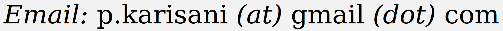

Payam Karisani

I am a researcher in NLP and ML at the computer science department in the University of Illinois at Urbana-Champaign (UIUC).
I work on large language models and their deficiencies. My previous research was on training models for low-data regime, I have published papers on Domain Adaptation, Active Learning, and Semi-Supervised Learning. My supervisor is Dr. Heng Ji.
Selected academic activities (the list will not be updated anymore): pc-member for ICML 2020–2024, ICLR 2021–2024, NIPS 2021–2024, AAAI 2021–2024.
9. Fact Checking Beyond Training Set
Venue: NAACL 2024 (full paper at the main research track, acceptance rate: 23%)
Authors: P. K., H. J.
Link | Code (soon)
8. Named Entity Recognition Under Domain Shift via Metric Learning for Life Sciences
Venue: NAACL 2024 (full paper at the main research track, acceptance rate: 23%)
Authors: H. L., Q. W., P. K., H. J.
Link
7. Masked LoGoNet: Fast and Accurate 3D Image Analysis for Medical Domain
Venue: KDD 2024 (full paper at the main research track, acceptance rate: 20%)
Authors: A. M., P. K., M. Z., S. C., N. D., H. J., S. P., R. R.
Link
6. Neural Networks Against (and For) Self-Training: Classification with Small Labeled and Large Unlabeled Sets
Venue: ACL 2023 (full paper at the Findigs research track, acceptance rate: ~30% out of 3872 papers.)
Authors: P. K.
Link | Code
5. Multi-View Active Learning for Short Text Classification in User-Generated Data
Venue: EMNLP 2022 (full paper at the Findigs research track, acceptance rate: ~30% out of 3242 papers.)
Authors: P. K., N. K., L. X.
Link | Data
4. Multiple-Source Domain Adaptation via Coordinated Domain Encoders and Paired Classifiers
Venue: AAAI 2022 (full paper at the main research track, acceptance rate: 15.0% out of 9020 papers)
Authors: P. K.
Link | Code
3. Semi-Supervised Text Classification via Self-Pretraining
Venue: WSDM 2021 (full paper at the main research track, acceptance rate: 18.6% out of 603 papers)
Authors: P. K., N. K.
Link | Code
2. Domain-Guided Task Decomposition with Self-Training for Detecting Personal Events in Social Media
Venue: WWW 2020 (full paper at the main research track, acceptance rate: 19.2% out of 1129 papers)
Authors: P. K., J. H., E. A.
Link
1. Did You Really Just Have a Heart Attack? Towards Robust Detection of Personal Health Mentions in Social Media
Venue: WWW 2018 (full paper at the main research track, acceptance rate: 15.0% out of 1140 papers. Best Paper Runner-Up.)
Authors: P. K., E. A.
Link | Code | Data